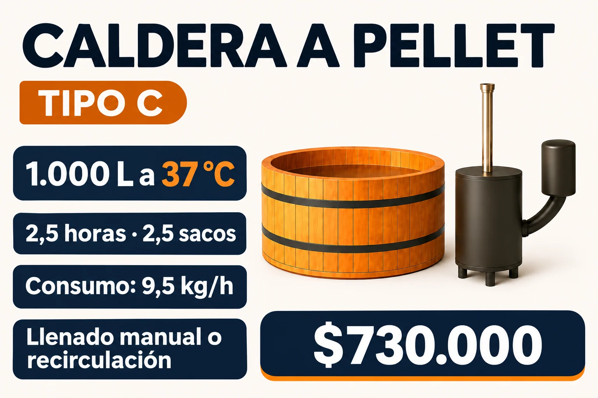
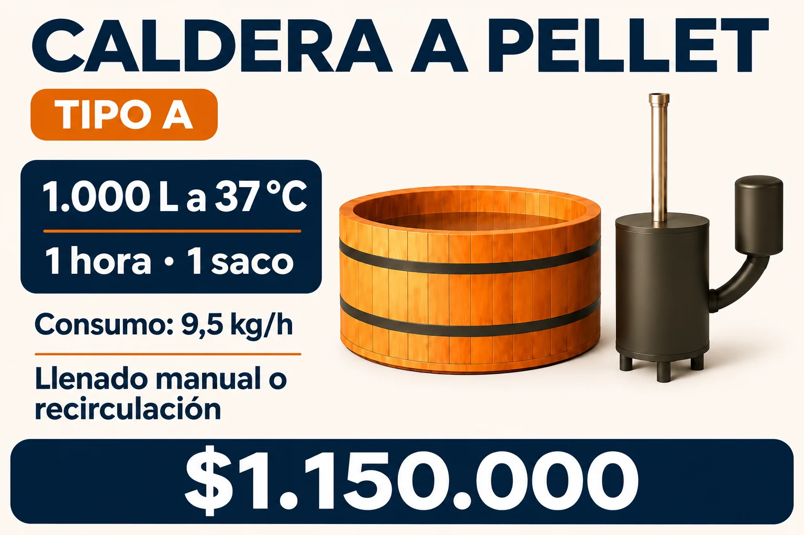
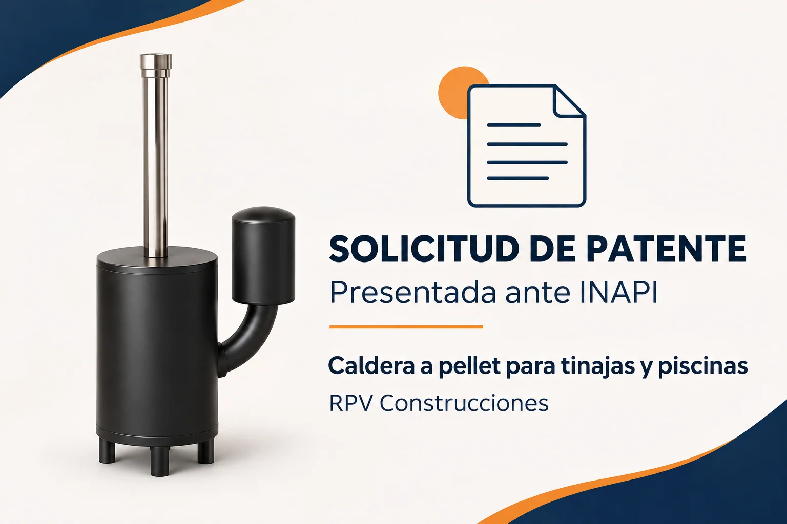

Guía de uso completa
Revisa las indicaciones de conexión, encendido, mantenimiento y apagado.
Abrir guía ↗Revisa las alternativas, compara sus datos y conversa con nuestro equipo para elegir con tranquilidad.

Selecciona un modelo para ver su ficha y solicitar más información.

1.000 litros a 37 °C en 1 hora con 1 saco de pellet.
Consumo indicado: 9,5 kg/h. Llenado manual o recirculación.
Valores y rendimiento según las fichas proporcionadas. Consulta vigencia, condiciones de operación y qué incluye cada modelo. Imágenes referenciales.
Datos para 1.000 litros a 37 °C según las fichas de producto.
Desliza la tabla para ver todos los datos →
| Modelo | Tiempo | Pellet | Precio |
|---|---|---|---|
| Tipo A | 1 hora | 1 saco | $1.150.000 |
| Tipo B | 2 horas | 2 sacos | $830.000 |
| Tipo C | 2,5 horas | 2,5 sacos | $730.000 |
Revisa las indicaciones de conexión, encendido, mantenimiento y apagado.
Abrir guía ↗
RPV presentó ante INAPI una solicitud de patente para su caldera a pellet.
Conversemos sobre las opciones y condiciones disponibles.
Conversar por WhatsApp ↗